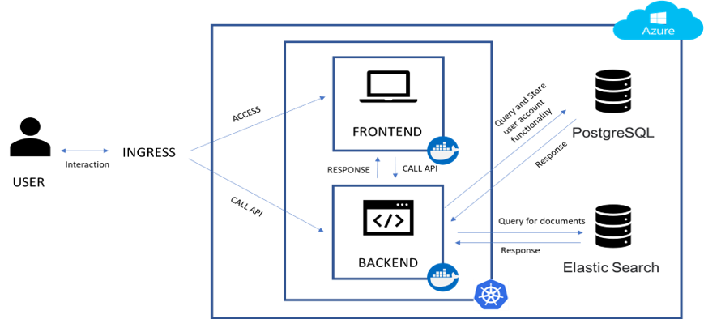

Our application ecosystem consists of the following components: frontend application, backend application, elastic server, and PostgreSQL. The frontend and the backend part was deployed in the azure kubenetes service(AKS) while the database was deployed separately. Once the user called the application the kubenetes ingress will find the correct route of the frontend application. While the frontend application have to call the backend application. The ingress will direct the frontend application request. Elastic server and PostgreSQL are connected to the backend application.
